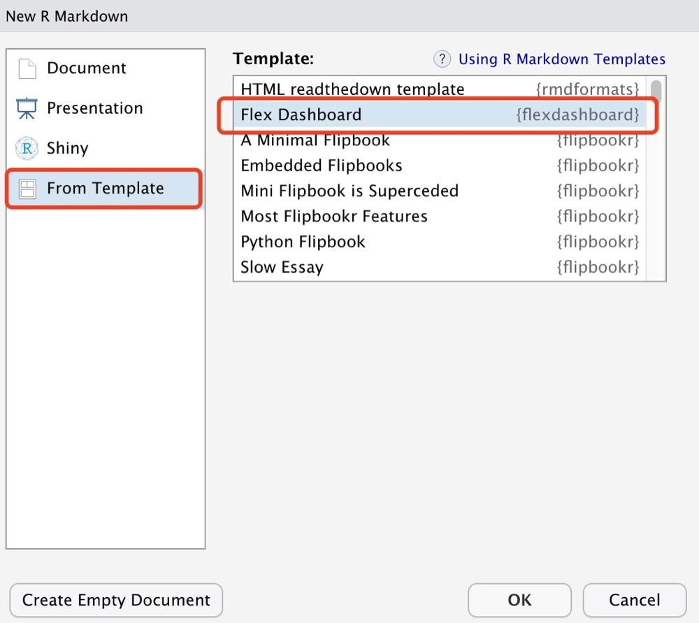
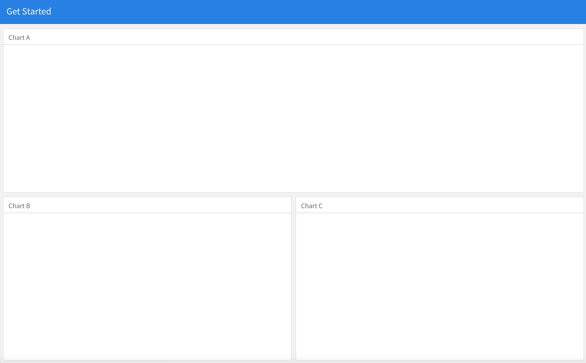
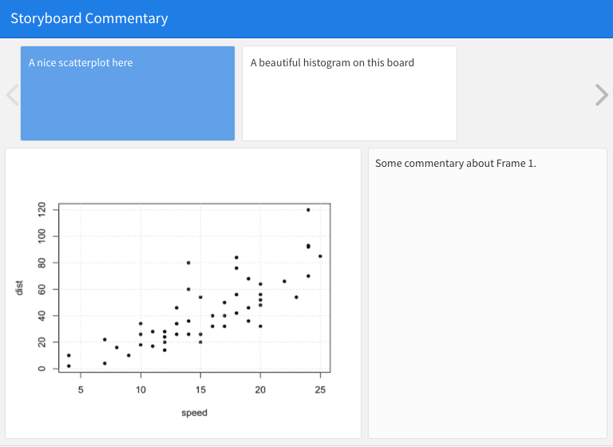
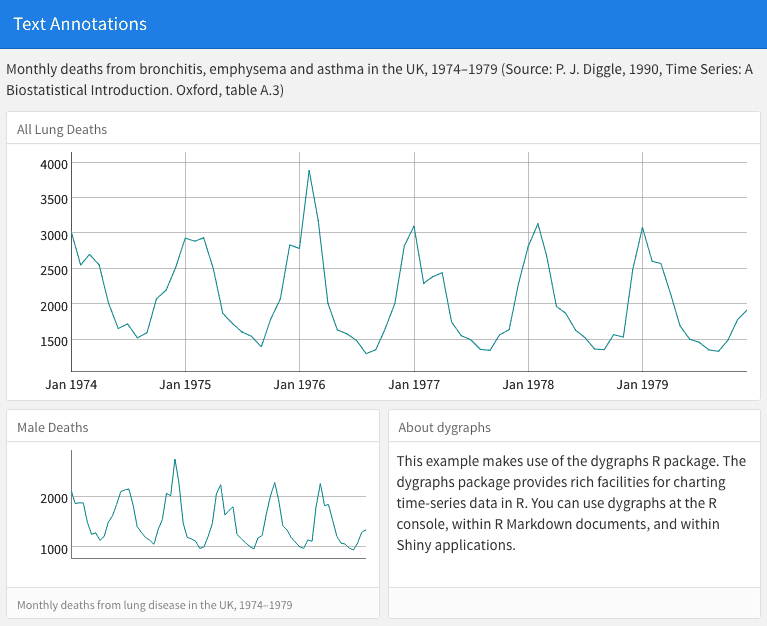
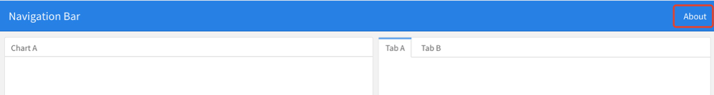
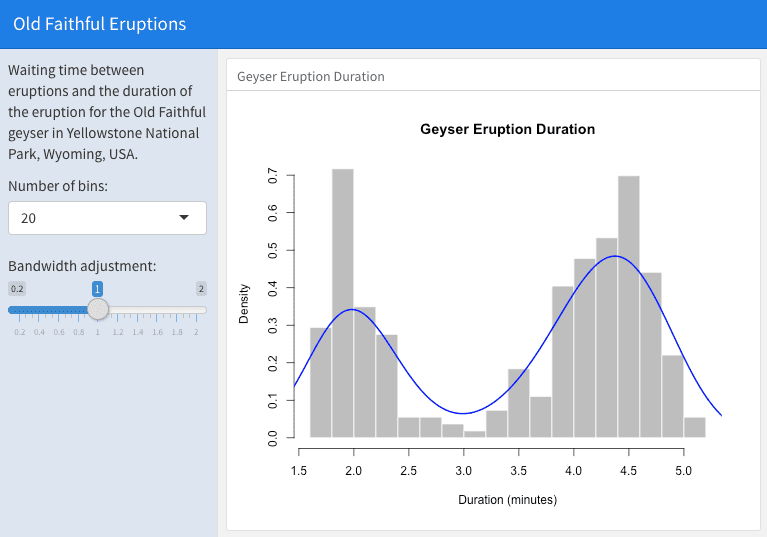

第 14 章 Dashboards
在本章中，我们将介绍基于 flexdashboard 包 (Iannone, Allaire, and Borges 2020) 的仪表盘设计。
仪表盘在业务风格的报告中特别常见。它们可以用来展示报告的概要和关键内容。仪表盘的布局通常是基于网格搭建的，各个组件排列在各种大小的“盒子”中。
使用 flexdashboard 包，你可以
使用 R Markdown 将一组相关数据可视化作为指示盘进行发布。
嵌入各种各样的组件，包括 HTML 小部件、R 图形、表格数据和文本注释等内容。
可以指定按行或列进行布局(各组件会自动调整大小以填满浏览器，并且在移动设备上也十分适配)。
可以创建故事板来呈现可视化图形和相关注释。
使用 Shiny 驱动动态可视化图表。
14.1 入门
首先，安装 flexdashboard 包：
install.packages("flexdashboard")其次，通过点击 File -> New File -> R Markdown 对话框在 RStudio 中创建文档，并选择 “Flex Dashboard” 模板。这是我们就已经创建了一个新的 dashboard 文件了。操作界面如图 14.1 所示：

图 14.1: 创建新的dashboard文件。
注：如果你并没有使用 RStudio 进行操作，那么你也可以从 R 控制台创建一个新的
flexdashboard的 R Markdown 文件，具体操作如下：
rmarkdown::draft(
"dashboard.Rmd", template = "flex_dashboard",
package = "flexdashboard"
)本章只介绍一些基本特性和用法。如果你想更进一步了解 flexdashboard，可以查看它的完整文档： https://rmarkdown.rstudio.com/flexdashboard/ 。
仪表盘有许多与 HTML 文档相同的特性(Section 5)，比如图形选项
(Section ??)，外观和风格5.2)，MathJax 公式 ??)，头部和正文前后内容 (Section ??) 和 Pandoc 参数(Section ??)，等等。建议大家有时间的话，把前面提到的几节内容也看一下。除此之外，我们也建议你浏览 R 帮助页面 ?flexdashboard::flex_dashboard 来了解更多 flexdashboard 选项和其特性。
当然Rstudio官网也给出了该包的视频介绍以及一些案例，你可以通过学习案例对应的代码实现快速入门。
14.2 排版
关于仪表盘布局的总体规则是：
一级标题：生成页面；
二级标题：生成列（或行）；
三级标题：生成框（包含一个或多个仪表盘组件）。
下面给出一个简单的例子：
---
title: "Get Started"
output: flexdashboard::flex_dashboard
---
```{r setup, include=FALSE}
library(flexdashboard)
```
Column 1
--------------------------------------------------
### Chart A
```{r}
```
Column 2
--------------------------------------------------
### Chart B
```{r}
```
### Chart C
```{r}
```请注意，第一行文本（Coluumn 1）下的一系列破折号是第二级标题的另一种 Markdown 语法形式，即：
Column 1
--------------------------------------------------等同于
## Column 1我们使用了一系列的破折号，只是为了让第二节在源文档中更为显眼罢了。
默认情况下，二级标题在仪表板上生成列，三级标题在列中垂直堆叠。所以在默认情况下，你不必在仪表盘上设置列，因为它默认会一列一列的垂直堆放显示。
注：二级标题的内容将不会显示在输出中。二级标题仅用于布局（例如，例子中的Column 1不会现实在输出中），因此标题的实际内容一点都不重要。相比之下，一级标题和三级标题更加重要。
图 14.2 显示了上述示例的结果，一共是两列，第一列为 “Chart A”，第二列为 “Chart B” 和 “Chart C”。
注：在这个例子中，我们没有在代码块中加入任何 R 代码，所以所有的框都是空的。当然在实际使用中，你可以编写任意的 R 代码来生成 R 图、HTML 小部件或 14.3 节中介绍的各种其他组件，并将其加入到这些“盒子”中。

图 14.2: 简单仪表盘布局示例。
14.2.1 基于行的布局
通过修改 orientation 选项将默认以列导向的布局改为以行导向的布局，例如：
output:
flexdashboard::flex_dashboard:
orientation: rows这时二级结构中将会按照行进行排列，三级结构中会按照行中的列进行堆叠。我们将上述例子修改后，输出结果如图 14.3 所示：

图 14.3: 基于行布局的结果。
14.2.2 节属性
二级结构头部还可以加入一些属性，例如：设置列宽度为350：
A narrow column {data-width=350}
--------------------------------在基于行布局的情况下，可以为行设置 data-height 属性。而基于列布局的情况下，可以使用 {.tabset} 使得三级结构以制表符的形式排列，例如：
Two tabs {.tabset}
------------------
### Tab A
### Tab B所得结果如图 14.4 所示：

图 14.4: 以制表符的形式排列所得到的结果。
14.2.3 多页
如果 rmd 文档中有多个一级结构的内容时，这时仪表盘会将每个一节结构分别显示为单独页面。下面给出一个简单的例子：
---
title: "Multiple Pages"
output: flexdashboard::flex_dashboard
---
Visualizations {data-icon="fa-signal"}
=====================================
### Chart 1
```{r}
```
### Chart 2
```{r}
```
Tables {data-icon="fa-table"}
=====================================
### Table 1
```{r}
```
### Table 2
```{r}
```
图 14.5: 仪表盘上的多个页面情况。
注：一系列等号是一级标题的另一种 Markdown 语法（也可以使用单个井号
#表示）。
从图 14.5 我们可以看到： 页面标题显示在仪表盘顶部的导航菜单中。一级结构单独构成一个页面。
本例中，我们还做了一个小拓展，通过 data-icon 属性将图标应用于页面标题中。当然，你可以从该网址 https://fontawesome.com 找到其他可用的图标。
14.2.4 故事板
除了基于列或行布局外，你还可以通过故事板（“storyboard”）进行布局，呈现一些可视化图形或其他说明。下面给出一个简单的例子：
---
title: "Storyboard Commentary"
output:
flexdashboard::flex_dashboard:
storyboard: true
---
### A nice scatterplot here
```{r}
plot(cars, pch = 20)
grid()
```
---
Some commentary about Frame 1.
### A beautiful histogram on this board
```{r}
hist(faithful$eruptions, col = 'gray', border = 'white', main = '')
```
---
Some commentary about Frame 2.
图 14.6: 基于故事板布局的结果。
如图 14.6 所示，你可以通过顶部的左右导航按钮来浏览所有故事板内容。
14.3 组件
仪表盘布局中可以包含各种各样的组件，包括：
基于 HTML 小部件的交互式 JavaScript 数据可视化图形。
R 图形，包括基础、栅栏和网格图形；
表格（可选选项包括：排序，过滤和分页等）；
数值框（展示重要数据）；
仪表盘；
文本注释；
导航栏（提供与仪表盘相关的更多链接）。
注：无论输出格式如何，前三个组件在大多数 R Markdown 文档中均可使用。 而后四个组件是仪表盘特有的，本节我们主要介绍后四个组件。
14.3.1 数值框
如果你希望在仪表盘中包含一个或多个数值，那么你可以使用 flexdashboard 包中的 valueBox() 函数来实现这个需求。下面给出一个简单的例子：
---
title: "Dashboard Value Boxes"
output:
flexdashboard::flex_dashboard:
orientation: rows
---
```{r setup, include=FALSE}
library(flexdashboard)
# these computing functions are only toy examples
computeArticles = function(...) return(45)
computeComments = function(...) return(126)
computeSpam = function(...) return(15)
```
### Articles per Day
```{r}
articles = computeArticles()
valueBox(articles, icon = "fa-pencil")
```
### Comments per Day
```{r}
comments = computeComments()
valueBox(comments, icon = "fa-comments")
```
### Spam per Day
```{r}
spam = computeSpam()
valueBox(
spam, icon = "fa-trash",
color = ifelse(spam > 10, "warning", "primary")
)
```
图 14.7: 仪表盘上并排的三个值。
图 14.7 展示了三个并排的仪表，每个仪表都显示了一个数值和标题。这里我们重点解释下第三个代码块（### Spam per Day）。这里的 valueBox() 函数定义了一个值( spam )和一个图标( icon = "fa-trash" )。并使用 color 设置参数框的颜色。内部使用了一个 ifelse() 语句，使得不同值表示不同的颜色。当然，可用的颜色还包括： "info", "success" 和 "danger"（默认值为： "primary"）。你也可以指定任何有效的 CSS 颜色（例如："#ffffff"， "rgb(100, 100, 100)" 等）。
14.3.2 仪表
仪表：在指定数值范围内显示仪表上的数值。例如，下面展示了三个仪表并排的结果（见图 14.8）
---
title: "Dashboard Gauges"
output:
flexdashboard::flex_dashboard:
orientation: rows
---
```{r setup, include=FALSE}
library(flexdashboard)
```
### Contact Rate
```{r}
gauge(91, min = 0, max = 100, symbol = '%', gaugeSectors(
success = c(80, 100), warning = c(40, 79), danger = c(0, 39)
))
```
### Average Rating
```{r}
gauge(37.4, min = 0, max = 50, gaugeSectors(
success = c(41, 50), warning = c(21, 40), danger = c(0, 20)
))
```
### Cancellations
```{r}
gauge(7, min = 0, max = 10, gaugeSectors(
success = c(0, 2), warning = c(3, 6), danger = c(7, 10)
))
```
图 14.8: 三个仪表并排放在仪表盘上。
这个示例需要解释以下几点：
通过
gauge()函数设置一个仪表盘。其内部三个参数需要确定：value，min和max（可以是任何数值）。可以指定一个可选的符号（
symbol）和值一起显示(在示例中， “%” 用来表示百分比)。可以使用
gaugeSectors()函数指定一组自定义的颜色扇区，默认颜色为绿色。扇区选项（sectors）可以指定三个值的范围(success,warning和danger) 使得仪表盘的颜色根据它的值变化而变化。
14.3.3 文本注释
你可以通过以下方式在仪表盘中包含额外的叙述说明：
在页面顶部加入相应文本内容。
定义不包含图表，而是仅包含任意内容(文本、图像和方程等)的指示板。
如图 14.9 所示，顶部包含了一些内容说明和右下角包含了一个只有内容的指示板：
---
title: "Text Annotations"
output:
flexdashboard::flex_dashboard:
orientation: rows
---
Monthly deaths from bronchitis, emphysema and asthma in the
UK, 1974–1979 (Source: P. J. Diggle, 1990, Time Series: A
Biostatistical Introduction. Oxford, table A.3)
```{r setup, include=FALSE}
library(dygraphs)
```
Row {data-height=600}
-------------------------------------
### All Lung Deaths
```{r}
dygraph(ldeaths)
```
Row {data-height=400}
-------------------------------------
### Male Deaths
```{r}
dygraph(mdeaths)
```
> Monthly deaths from lung disease in the UK, 1974–1979
### About dygraphs
This example makes use of the dygraphs R package. The dygraphs
package provides rich facilities for charting time-series data
in R. You can use dygraphs at the R console, within R Markdown
documents, and within Shiny applications.
图 14.9: 仪表盘上的文本注释。
注：仪表盘中的每个组件都可以包括标题和注释部分。三级结构 (
###) 后面的文本为标题；>开头的文本是注释。
14.3.4 导航栏
默认情况下，仪表盘的导航栏包括：标题（title）、作者（author）和日期（date）。当仪表盘有多个页面时(第??节)，导航条左侧还包含指向各个页面的链接。当然，你也在可以仪表盘上添加社交链接。
除此之外，使用 navbar 选项可以在导航栏中添加自定义链接。例如，在导航栏中添加 “About” 链接：
---
title: "Navigation Bar"
output:
flexdashboard::flex_dashboard:
navbar:
- { title: "About", href: "https://example.com/about" }
---这时得到的界面如图 14.10 所示：

图 14.10: 导航栏中添加自定义链接。
注：导航栏必须包括标题或图标(或两者都包含)。你还可以使用
href作为导航目标。如果想调整文本对齐方式，可以使用align参数 (默认情况下为右对齐)。
除此之外，你可以通过 social 选项添加社交链接。例如，下面的仪表盘包括了 Twitter 和 Facebook 链接，以及一个包含更多服务的下拉菜单：
---
title: "Social Links"
output:
flexdashboard::flex_dashboard:
social: [ "twitter", "facebook", "menu" ]
---这时得到的界面如图14.11下所示：

图 14.11: 导航栏中添加社交选项。
社交链接选项还包括："facebook", "twitter", "google-plus", "linkedin" 和 "pinterest"。
14.4 Shiny
在仪表盘中添加 Shiny，可以利用 viewers 更改参数，并显示实时结果。或者当仪表盘的数据发生变化时，让仪表盘进行实时更新(请参阅 shiny 包中的 reactiveFileReader() 和 reactivePoll() 函数)。这是通过将 runtime: shiny 添加到标准仪表盘文档来实现的，然后添加一个或多个输入控件或响应式表达式来动态驱动仪表板内组件的外观。
在 flexdashboard 中使用 Shiny 可以将一个静态的 R Markdown 报告变成一个交互式文档。需要注意的是，交互式文档需要部署到 Shiny 的服务器上，以便广泛共享(而静态 R Markdown 文档是可以附加到电子邮件或从任何标准 web 服务器提供的独立 web 页面)。
注意， shinydashboard 包提供了用 Shiny 创建仪表板的另一种方法。
14.4.1 入门指南
在仪表盘中添加 Shiny 组件的步骤如下：
在文档顶部 YAML 元数据中添加
runtime: shiny。在仪表盘第一列添加
{.sidebar}属性，使其成为 Shiny 控件输入的控制台（注：这一步不是必须的，但这是基于 Shiny 仪表盘的经典布局）。根据需求，添加 Shiny 的输入和输出。
当代码中包含绘图函数时（例如：
hist()），得将它们封装在renderPlot()中。这有利于界面在布局更改时，自动调整尺寸大小。
14.4.2 Shiny 仪表盘的一个示例
图 14.12 给出了 Shiny 仪表盘的一个示例：
---
title: "Old Faithful Eruptions"
output: flexdashboard::flex_dashboard
runtime: shiny
---
```{r global, include=FALSE}
# 在全局块中加载数据，以便仪表盘的所有用户可以共享
library(datasets)
data(faithful)
```
Column {.sidebar}
--------------------------------------------------
Waiting time between eruptions and the duration of the eruption
for the Old Faithful geyser in Yellowstone National Park,
Wyoming, USA.
```{r}
selectInput(
"n_breaks", label = "Number of bins:",
choices = c(10, 20, 35, 50), selected = 20
)
sliderInput(
"bw_adjust", label = "Bandwidth adjustment:",
min = 0.2, max = 2, value = 1, step = 0.2
)
```
Column
--------------------------------------------------
### Geyser Eruption Duration
```{r}
renderPlot({
erpt = faithful$eruptions
hist(
erpt, probability = TRUE, breaks = as.integer(input$n_breaks),
xlab = "Duration (minutes)", main = "Geyser Eruption Duration",
col = 'gray', border = 'white'
)
dens = density(erpt, adjust = input$bw_adjust)
lines(dens, col = "blue", lwd = 2)
})
```
图 14.12: 基于 Shiny 的交互式仪表盘。
其中，仪表盘的第一列包含了 {.sidebar} 属性和两个 Shiny 的输入控件；第二列包含了绘制图表的 Shiny 代码。
注：文档顶部标记为
global的 R 代码块在全局环境中都可以被调用。这将为用户带来更好的启动性能，强烈推荐大家使用。
14.4.3 输入栏
通过添加 {.sidebar} 属性设置一个默认布局为左对齐，250像素宽度的左侧边栏。
在搭建多个页面的仪表盘时，如果你想创建一个应用于所有页面的工具条。这时，你可以使用一级结构来定义侧边栏。
14.4.4 拓展
下面给出一些学习 Shiny 和创建交互式文档的资源：
Shiny 官方网站( http://shiny.rstudio.com) ：包含大量的文章、教程和示例。
Shiny 网站上的文章“Introduction to Interactive Documents”，这是一个很好的入门指南。
关于部署交互式文档，你可以使用 Shiny Server 或 RStudio Connect：https://www.rstudio.com/products/shiny/shiny-server/。